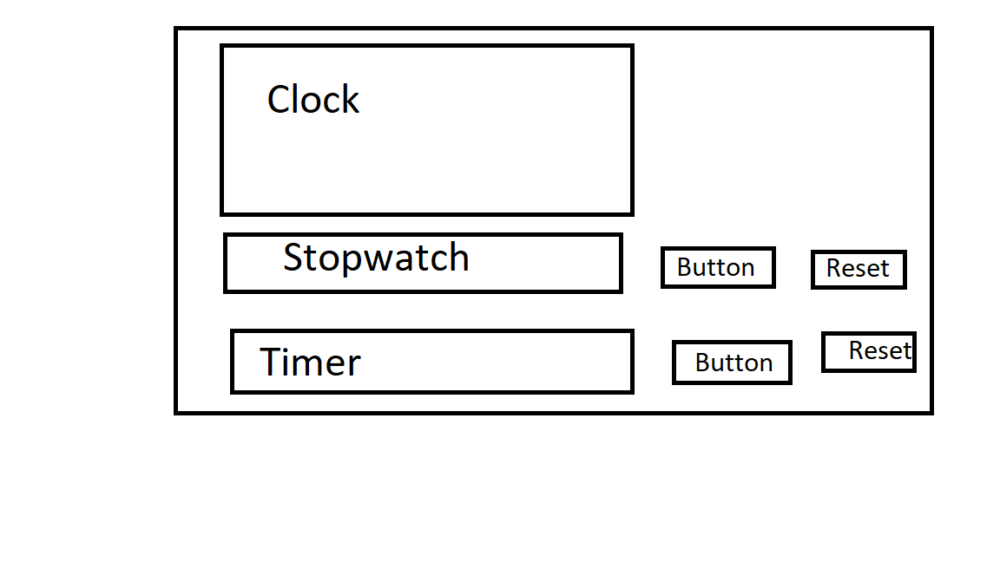

1. When tkinter essential is mentioned it means only that the line of code is only used for tkinter and not for anything else.
2. Indentation are used in the form of TABS of length 4 not spaces
The indentation used in this project are to be only done with TABS NOT SPACES
The clock is divided into 3 parts. The first part is the main clock part. This part is only used for displaying time in the form of a 24 hours hour clock. The second part is the stopwatch part which is used for displaying the stopwatch in the form of hours:minutes:seconds. The third part is the timer part, the current plan is to have a json file which decides how long timer will last. 